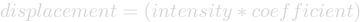
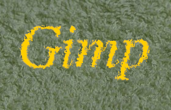
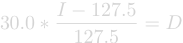
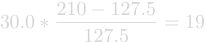
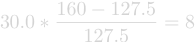
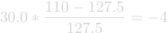
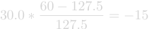

Figura 17.293. Exemplos de deslocamento

Imagem original
The displacement map has four gray stripes with values of 210, 160, 110, and 60, respectively.

Horizontal displacement coefficient is 30. Vacated pixels are black. The image areas corresponding to light gray (128) were displaced 19 and 8 pixels to the left. The image areas corresponding to dark gray (127) were displaced 4 and 15 pixels to the right.
This filter uses a “displace-map” to displace corresponding pixels of the image. This filter displaces the content of the specified drawable (active layer or selection) by the amounts specified in Horizontal and vertical Displacement multiplied by the intensity of the corresponding pixel in the “displace map” drawables. Both Horizontal and Vertical displace maps should be grayscale images and have the same size as the drawable . This filter allows interesting distortion effects.

- Presets, “Input Type”, Clipping, Blending Options, Pré-visualização, Merge filter, Split view
-
![[Nota]](images/note.png)
Nota Essas opções são descritas em Seção 2, “Recursos comuns”.
- Horizontal/Radial, Vertical/Angular
-
Clicking on one of the image buttons opens a small file browser with two panels where you can select a displacement map. The left panel shows images present on your screen. The right panel shows the layers of the selected image. Double click on the wanted layer to select the map.
You can select different maps for Horizontal and Vertical displacements.
- Modo de deslocamento
-
You can choose working in Cartesian coordinates, where pixels are displaced in Horizontal or Vertical direction, or working in Polar coordinates, where the image is pinched and whirled by displacing pixels in radial or tangent direction.
Veja as próximas seções para detalhes sobre essas opções.
- Sampler
-
Interpolation methods are described in Transform tools
- Abyss policy
-
These options allows you to set displacement behavior on active layer or selection edges. They are described in Abyss policy
Figura 17.295. Opções do filtro Deslocar (Cartesiano)

Horizontal and vertical displacements are 20 pixels
Em ambos os modos, a direção e quantidade de deslocamento dependem da intensidade do pixel correspondente no mapa de intensidade.
O mapa, que é tratado como uma imagem em tons de cinza, mesmo que seja colorida, tem 256 níveis de cinza (de 0 até 255), e o valor médio teórico é 127,5. O filtro desloca pixels na imagem correspondentes a pixels no mapa com valores menores que 127,5 em uma direção, e pixels com valores entre de 128 até 255 na direção oposta.
- Horizontal displacement, Vertical displacement
-
If the respective option is activated, image pixels corresponding to pixels from 0 to 127 will be displaced to the right for Horizontal, downwards for Vertical, image pixels corresponding to pixels from 128 to 255 will be displaced to the left for Horizontal, upwards for Vertical.
What you enter in input boxes, directly or by using arrow-head buttons, is not the actual displacement. It's a coefficient used in a

formula, which gives the pixel actual displacement according to the scaled intensity [11] of the corresponding pixel in map, modulated by the coefficient you enter. Introducing intensity into formula is important: this allows progressive displacement by using a gradient map.Este valor pode ser positivo ou negativo. O valor varia em limites até o dobro das dimensões da imagem.
When you click on the drop-down list button, a list appears where you can select a displacement map. To be present in this list, an image must respect two conditions. First, this image must be present on your screen when you call filter. Then, this image must have the same dimensions as the original image. Most often, it will be a duplicate original image, which is transformed to gray scale and modified appropriately, with a gradient. It may be possible to use RGB images, but color luminosity is used making result prevision difficult. Map may be different in horizontal and vertical directions.

- Afundar
-
Se esta opção estiver ativada, as coordenadas radiais (isso é, a distância de um ponto ao ponto central da imagem, o “polo” central) dos pixels serão alteradas. Os pixels correspondentes a pixels no mapa com intensidade entre 0 e 127 se deslocarão para fora, e os pixels mapeados para pontos com intensidade entre 128 e 255 se deslocarão em direção ao centro.
For the values and the displacement map see above (“Horizontal/Vertical displacement”).
O deslocamento é independente da distância polar, todos os pixels são deslocados pela mesma quantia. Então a imagem não será só esticada ou comprimida, mas também distorcida:

Distorção da imagem pela opção Afundar
A 160×120 pixels image, plain white displacement map, and displacement coefficient 20.0: this results in a 20 pixels displacement towards center. This is a horizontal reduction in size by 25%, vertical by 33%, and diagonal by 20%, so the image will be distorted.
- Redemoinho
-
Se esta opção for ativada, as coordenadas angulares dos pixels da imagem serão “deslocadas” por um valor dependendo dos pixels do mapa. Para um mapa de deslocamento de cor sólida, a imagem será rotacionada. Para mapas mais complexos, o efeito será como na forma de um redemoinho.
Os pixels correspondentes a pixels no mapa com intensidade entre 0 e 127 se deslocarão no sentido anti-horário, e os pixels mapeados para pontos com intensidade entre 128 e 255 se deslocarão no sentido horário.
Para os valores e o mapa de deslocamento, veja acima.
|
|
Nota |
|---|---|
|
For a plain, non neutral map, if displace mode “Polar” is enabled, this filter works like Whirl and Pinch. |
Siga os seguintes passos:
-
Comece criando uma nova imagem, do tamanho que quiser
-
Duplicate this image. Activate this duplicate and make it grayscale ( → → ). Fill it with the wanted gradient. This image will be your Displacement map, with the dimensions of original image.

-
Activate original image. Create a Text Layer with your text. Set layer to image size: right-click on the layer in Layers dialog and, in the pop-up menu, click on “Layers to image size”. Note that letters in text layer lie on a transparent background; now this filter doesn't displace transparent pixels. Only letters will be displaced.

-
Com a camada de texto ativa, abra a janela do filtro de Deslocar. Ajuste os parâmetros — em particular, o coeficiente de deslocamento, de acordo com o resultado na pré-visualização. Clique em OK.

Esse método pode ser usado com camadas de outras imagens, ou simplesmente em camadas da mesma imagem:

![[Dica]](images/tip.png)
|
Dica |
|---|---|
|
Para chegar ao degradê desejado, desenhe um degradê de preto para branco, e então use a ferramenta de Curvas para modificar as intensidades de deslocamento representadas pelo degradê. Lembre-se: Este é um bom exercício para aprender o que é possível fazer com o filtro de deslocamento, mas se você realmente deseja um texto curvo, tente usar o filtro em Filtros->Distorções->Dobrar em curva, ou fazer uso do comando “Texto ao longo de vetor” do menu de contexto da ferramenta de texto. |
Siga os seguintes passos:
-
Open the image with an uneven texture.
-
Create the map: Duplicate the image. Then select → → .
-
Create the text in Texture image. Move it if necessary. Make this text layer the same size as the image via Layers to Image Size.
-
Open the “Displace” filter. Click on the button and double-click on the map image thumbnail in the left panel.

Filter applied
A seção seguinte vai lhe mostrar como calcular a quantidade de deslocamento, se você estiver interessado nesses detalhes. Se você não quiser saber mais sobre eles, simplesmente pule esta seção.
The overview example showed the horizontal displacement using a coefficient of 30.0: 19, 8, 4, or 15 pixels, depending on the gray level of the displacement map's color.
Por que essas quantidades exatas? Isso é fácil:





Se você verificar essas equações, você notará que os valores que elas dão não dão os resultados exatos que colocamos no exemplo (usando números que não sejam inteiros, isso não é uma surpresa). Então, os resultados são arredondados para o inteiro mais próximo e os pixels são deslocados pelo número inteiro resultante? Não. Cada pixel é deslocado exatamente pela quantia calculada: um “deslocamento por uma distância fracionária” é feito por interpolação. Uma olhada de perto na imagem de exemplo pode ser o suficiente para perceber isso:

O deslocamento faz com que pequenas áreas (de 1 pixel de largura) de cores intermediárias nas bordas das áreas de cores sólidas. Por exemplo, a área em preto (no detalhe da imagem) é causada por um deslocamento de -4,12, então a cor intermediária é 12% preta e 88% dourada.
Portanto, se você selecionar um coeficiente de deslocamento de 30,01 em vez de 30,00, você, de fato, terá uma imagem diferente, embora você não seja possível notar a diferença sem um zoom muito alto, e comparando a diretamente a diferença entre as duas imagens.